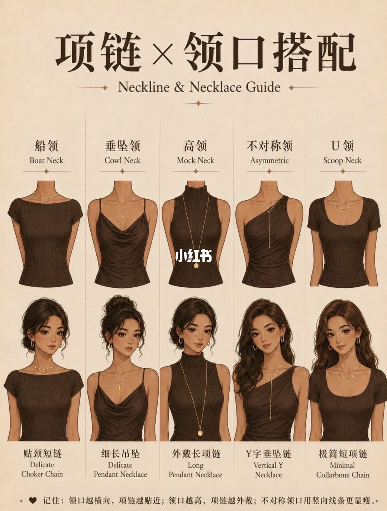
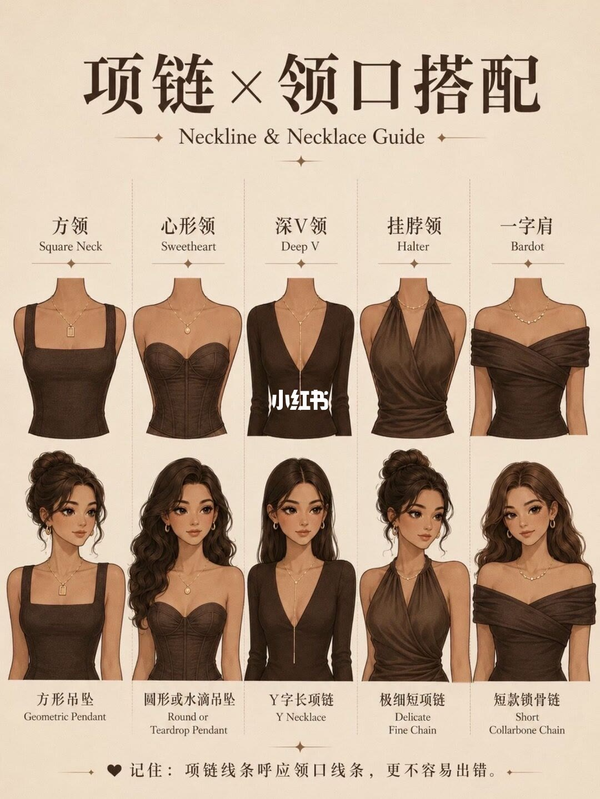
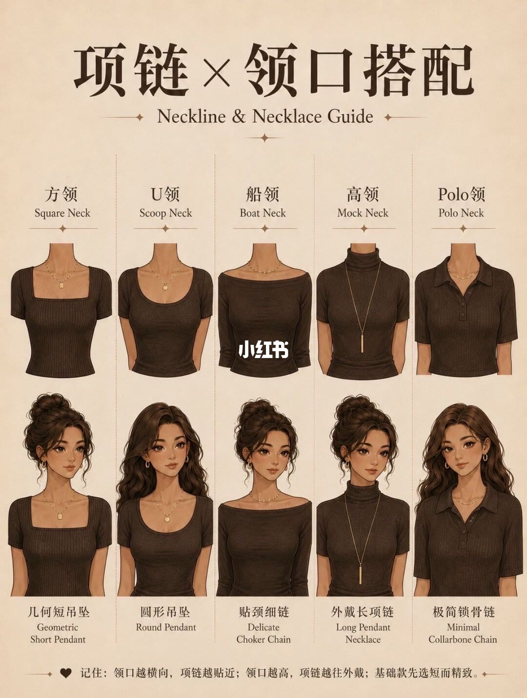
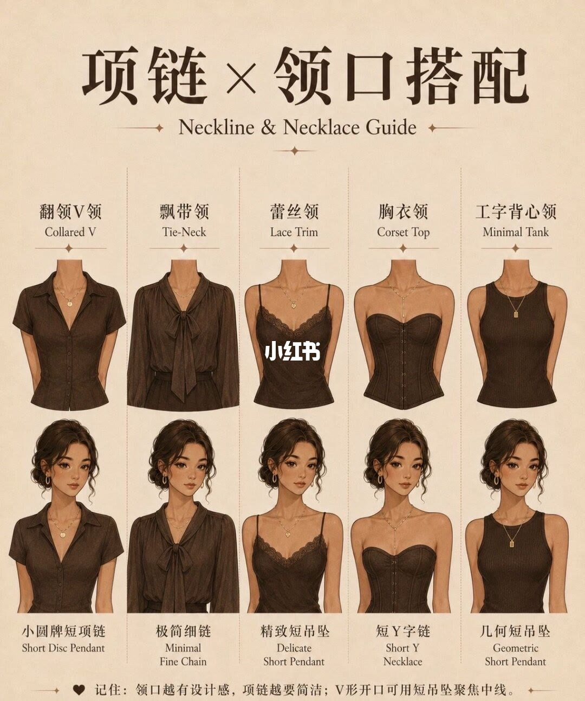

图文实录 · 小红书 · 穿搭云
20种领口对应20种项链
标题把搭配写成 20 对 20。四页各排 5 栏，加起来是 20 栏，但领口名称有重复：方领、U 领、船领、高领各出现两次，两次的项链用词并不完全一样。图上给出的是一种对应思路，同一领口还可以有别的戴法。
1/4
横向、高领和不对称

页眉是「项链×领口搭配」，英文副题 Neckline & Necklace Guide。五栏从左到右：船领 Boat Neck，贴颈短链 Delicate Choker Chain；垂坠领 Cowl Neck，细长吊坠 Delicate Pendant Necklace；高领 Mock Neck，外戴长项链 Long Pendant Necklace；不对称领 Asymmetric，Y 字垂坠链 Vertical Y Necklace；U 领 Scoop Neck，极简短项链 Minimal Collarbone Chain。每栏上面是领口和项链的线稿，下面是深色衣服、浅色项链的插画半身。画面中部有「小红书」水印。
页脚写：「记住：领口越横向，项链越贴近；领口越高，项链越外戴；不对称领口用竖向线条更显瘦。」句末还有一个小图标，形状无法确认。
2/4
线条互相呼应

版式与第 1 页相同。五栏：方领 Square Neck，方形吊坠 Geometric Pendant；心形领 Sweetheart，圆形或水滴吊坠 Round or Teardrop Pendant；深 V 领 Deep V，Y 字长项链 Y Necklace；挂脖领 Halter，极细短项链 Delicate Fine Chain；一字肩 Bardot，短款锁骨链 Short Collarbone Chain。中部同样有「小红书」水印。
页脚写：「记住：项链线条呼应领口线条，更不容易出错。」这一页没有写出层叠，一字肩栏的文字只有短款锁骨链。
3/4
重复领口，用词略有不同

五栏：方领 Square Neck，几何短吊坠 Geometric Short Pendant；U 领 Scoop Neck，圆形吊坠 Round Pendant；船领 Boat Neck，贴颈细链 Delicate Choker Chain；高领 Mock Neck，外戴长项链 Long Pendant Necklace；Polo 领 Polo Neck，极简锁骨链 Minimal Collarbone Chain。高领这一栏与第 1 页同名，项链也同为外戴长项链。方领、U 领、船领的中文用词和第 1、2 页不完全相同。
页脚写：「记住：领口越横向，项链越贴近；领口越高，项链越往外戴；基础款先选短而精致。」前两句接近第 1 页，第三句是这一页多出来的。句末小图标形状无法确认。
4/4
设计感领口配得更简

五栏：翻领 V 领 Collared V，小圆牌短项链 Short Disc Pendant；飘带领 Tie-Neck，极简细链 Minimal Fine Chain；蕾丝领 Lace Trim，精致短吊坠 Delicate Short Pendant；胸衣领 Corset Top，短 Y 字链 Short Y Necklace；工字背心领 Minimal Tank，几何短吊坠 Geometric Short Pendant。中部有「小红书」水印。
页脚写：「记住：领口越有设计感，项链越要简洁；V 形开口可用短吊坠聚焦中线。」翻领 V 领用的是小圆牌短项链，不是第 2 页深 V 那一栏的 Y 字长项链。
汇总
二十栏是清单，不是唯一答案
结论：四页按领口形状给项链一个落点。横向开口靠近脖子，高领戴在衣服外面，开口线条和项链线条互相跟着走，领口本身已经很花时项链写得更短、更简。这些是页脚和栏目标签里的说法。
支撑页：第 1 页给出船领、垂坠领、高领、不对称领、U 领，以及「横向贴近、高领外戴、不对称用竖线」这句。第 2 页给出方领、心形领、深 V、挂脖、一字肩，页脚改成线条呼应。第 3 页重排方领、U 领、船领、高领，并加上 Polo 领；高领仍是外戴长项链，另外三栏的项链用词变了，页脚多了「基础款先选短而精致」。第 4 页是翻领 V、飘带、蕾丝、胸衣、工字背心，页脚改成设计感越强项链越简，V 形开口用短吊坠。
边界：20 是栏数。去掉重复名称后，图上的领口不到 20 种。笔记正文另写了圆领对小圆牌或短项链、一字肩还可层叠细链、衬衫用短吊坠或叠戴；图上没有「圆领」「衬衫」这两栏，一字肩栏也没有写出层叠。深 V 和翻领 V 不是同一种链。「更显瘦」「更不容易出错」没有尺寸，也没有对比试穿。插画不能当成唯一好看的戴法。